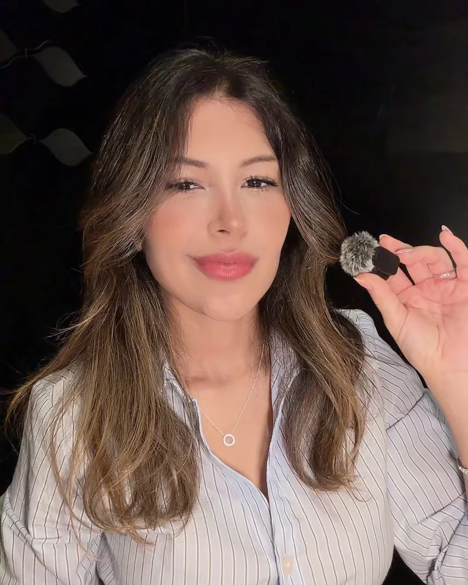

Oi, eu sou a Carol. Estudo Gestão de Tecnologia e dou aulas de inglês. Foi dando aula que encontrei meu primeiro problema real para resolver com tecnologia. Me apaixonei por inteligência artificial quando decidi criar uma plataforma inteira para os meus alunos, usando a IA como ferramenta.

O sistema registra acertos e erros e monta a revisão do dia, contra a curva do esquecimento.
Um script encontra as frases sem áudio e gera a voz com IA (ElevenLabs). Já são 6.744 áudios.
A partir do conteúdo de cada unidade, geradores criam slides, material e listas de exercícios.
Uma auditoria automática revisou 10.710 exercícios e um robô responde todas as listas antes do aluno: 426 de 426 aprovadas.
Toda segunda, um fluxo no n8n resume o progresso dos alunos e sugere reforços. A IA só recebe números, nunca nomes.
Os erros reais do aluno viram o roteiro da próxima aula, num fluxo do n8n.
Ao liberar uma atividade ou dar um feedback, o portal já monta a mensagem pro aluno.
Com o ManyChat, quem pede informação na DM recebe resposta na hora e vai direto pro WhatsApp.
Cada atualização sobe sozinha pro ar com GitHub Actions.
Aprendi a conectar serviços entre si por API: Supabase, Gemini, ElevenLabs, Gmail e ManyChat conversam sem eu precisar copiar nada à mão. É isso que faz todas as automações acima funcionarem.
Cada unidade tem um template próprio e animações que acompanham o progresso da aula. Role mais rápido e a galeria acelera.
Um agente pra o aluno treinar a fala, com o retorno "você disse × um nativo diria".
Missão de áudio semanal com checagem automática antes da revisão da professora.
Levar o que aprendi no MVP multiagente pra dentro do Inglês Club, sem esbarrar em limite de iterações.
Formação: Tecnólogo em Gestão de Tecnologia da Informação, em andamento, com conclusão prevista para dezembro de 2027.